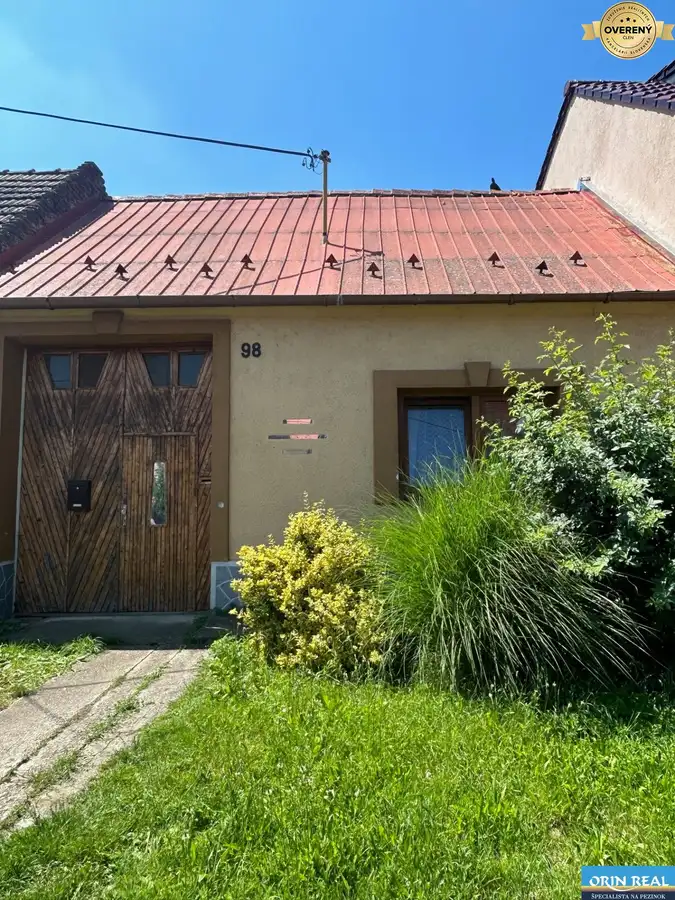
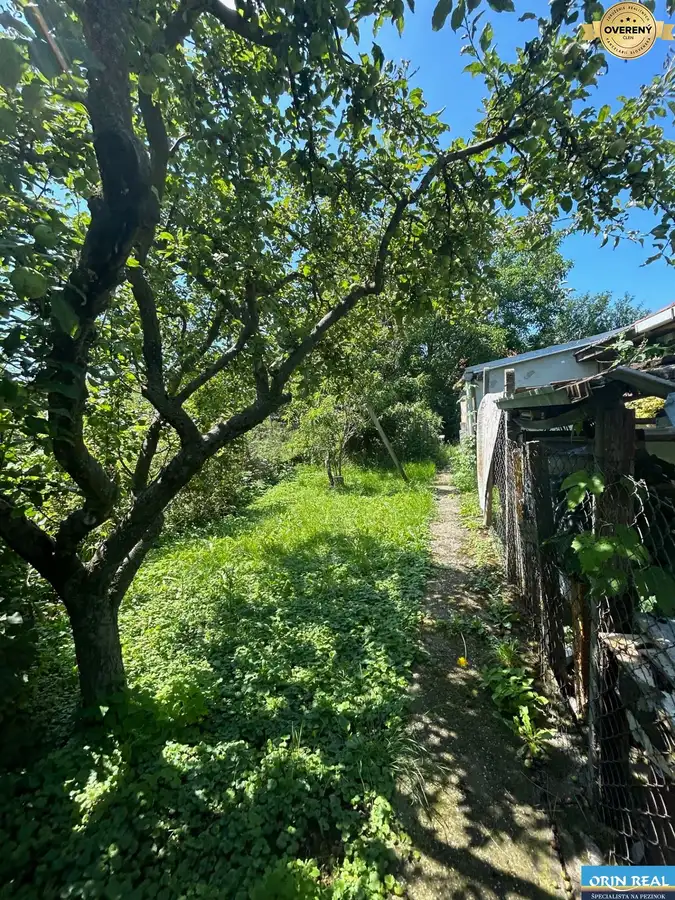
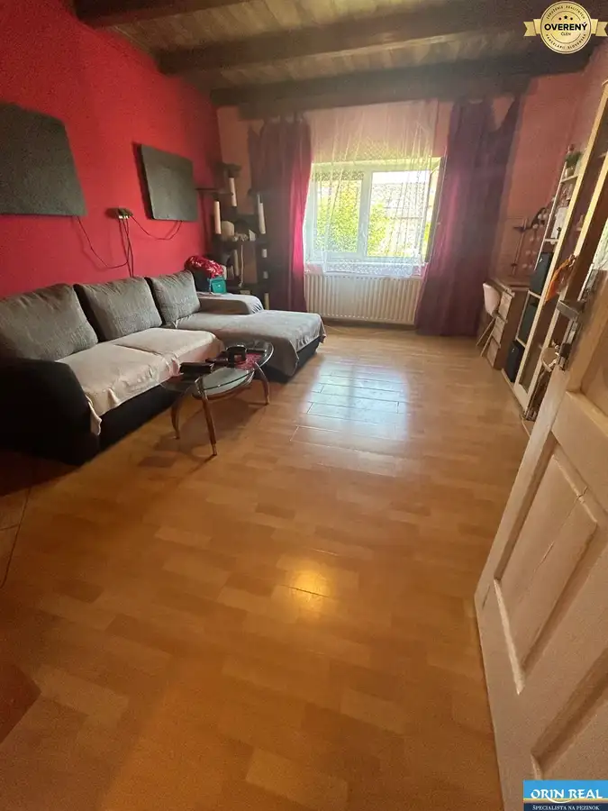
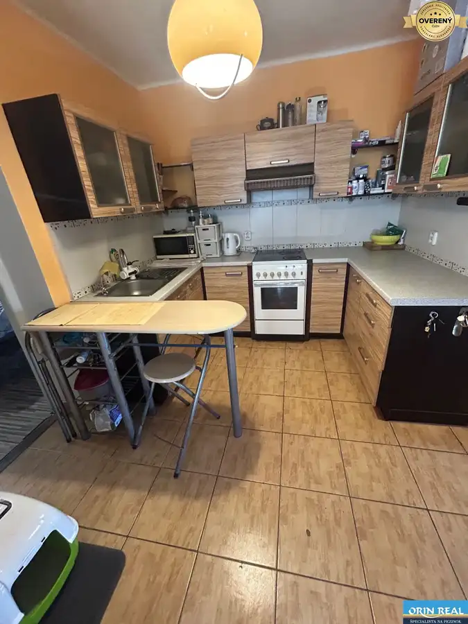
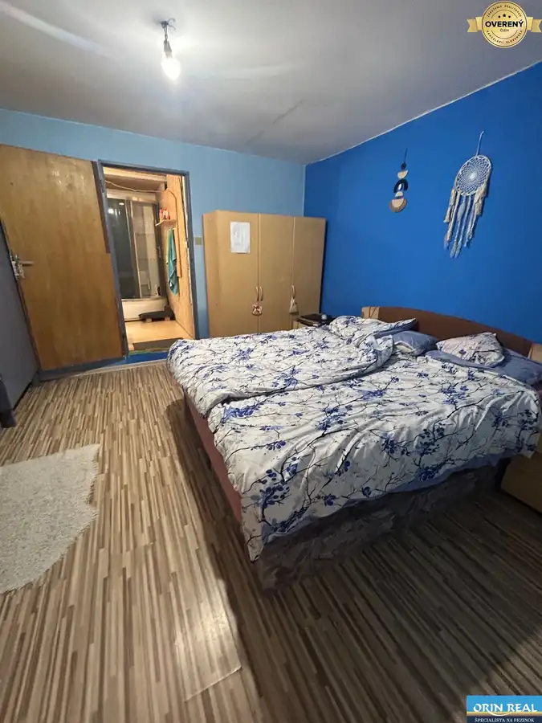
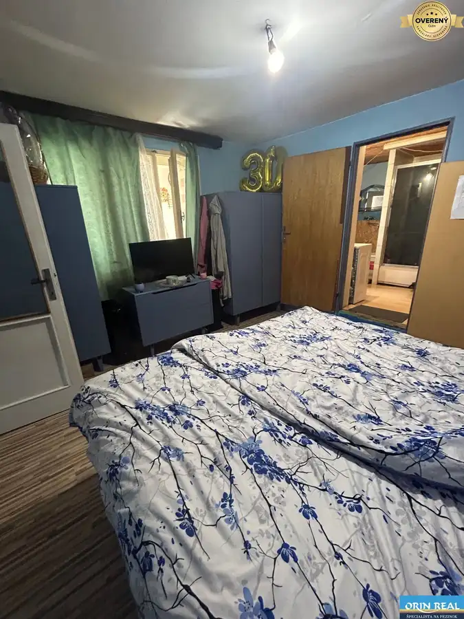

Na predaj starší rodinný dom v obci Budmerice 541m2
Budmerice







- Dispozícia6-izbový
- Plocha200 m²
- Stavpôvodný
- Vlastníctvoosobné
O nehnuteľnosti
Dom sa nachádza na ulici Juraja Holčeka, je členitý dlhý na užšom pozemku rozdelenom v prednej časti na zastavanú obytnú časť a v zadnej časti na úžitkovú záhradu. Dom je v pôvodnom stave s menšou staršou rekonštrukciou.
Popis nehnuteľnosti:
- pozemok má rozlohu 541m2
- zastavaná plocha domu aj s predným vstupom a úkolom na parkovanie 1 auta 238m2, pred domom sa zaparkujú ešte 2-3 autá
- šírka pozemku cca 8m a dĺžka cca 70m
- strešná krytina škridla, plech
- terén pozemku rovina
- rok výstavby pôvodného domu 1900, prístavba prednej časti v roku 1990
- možnosť prerobiť na 2 samostatné bytové jednotky
- počet izieb: 4
- počet kuchýň: 2
- počet kúpeľní: 2
- čiastočne podpivničený cca 40m2, na povale úložný priestor od vstupu po celej dĺžke domu
- WC je vybudované, nie je pripojené na kanalizáciu
- kúrenie ústredné kotol na tuhé palivo Buderus
- voda na pozemku studňa, pri pozemku obecný vodovod
- pripojenie elektrika
- záhrada s rozlohou 303m2 úžitková s ovocnými stromami a hospodárskymi stavbami na zbúranie
Obec Budmerice sa nachádza kúsok od Malých Karpát je tu veľmi dobrá infraštruktúra - škola, škôlka, reštaurácie, lekár, lekáreň, čerpacia stanica, bankomat a sieť miestnych obchodov, kaštieľ Budmerice je vyhľadávaná turistická a rekreačná pamiatka. Z vedľajšej obce pripojenie na diaľnicu
Lokalita ponúka tichšie, kľudné prostredie plné zelene a príjemných susedov.
Rodinný dom je kúpou voľný a cena nehnuteľnosti je 160.000,-Eur s kompletným právnym a hypotekárnym servisom.
Parametre
- Rozloha pozemku
- 541 m²
- Zastavaná plocha
- 238 m²
- Celková rozloha
- 541 m²
- Úžitková plocha
- 200 m²
- Poschodie
- neuvedené
- Počet poschodí
- 1
- Počet izieb
- 6
- Vlastníctvo
- osobné
- Stav
- pôvodný
- Status
- aktívne
- Odvoz odpadu
- áno
- Voda
- verejný vodovod
- El. napätie
- 230/400V
- Kanalizácia
- nie
- Internet
- optika
- Kúpeľňa
- sprchovací kút
- Vykurovanie
- vlastné - plyn
- Pivnica
- áno
- Garáž
- áno - 1 auto
- Parkovanie
- vlastné vyhradené
- Inžinierske siete
- áno
- Postavené z
- Zmiešané
- Zariadenie
- nezariadený
- Zateplený objekt
- nie
- Klimatizácia
- nie
- Predzáhradka
- áno
- Bezbariérový prístup
- nie
- Terén
- rovina
- Prístupová cesta
- asfaltová cesta
- Dátum zverejnenia
- 2026-08-26